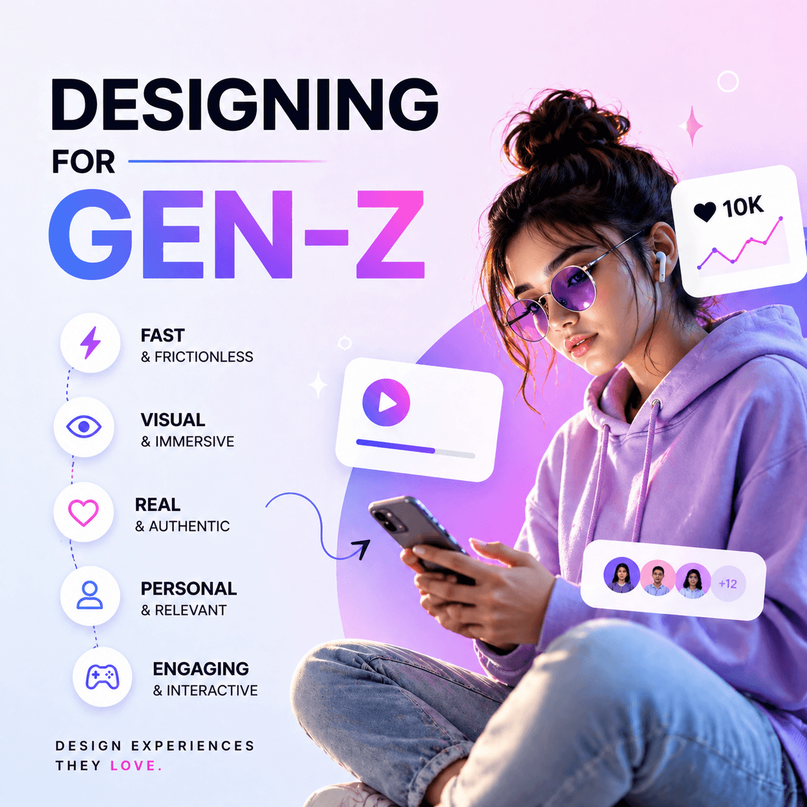

Design Articles You’ll Love
My latest UI/UX articles explore the future of minimal design, the impact of micro-interactions. I also cover the growing role of AI in UX workflows and share simple tips for designing clean, readable dark-mode interfaces.

Designing for Gen-Z: Instant Impact Wins
Why Gen-Z judges products in seconds and how UI/UX must adapt with bold visuals & micro-interactions.

UI vs UX vs CX — Finally Explained!
A simple breakdown of how UI, UX & CX work together to build lovable products.

Why Skeleton Screens Improve UX More Than Spinners
How skeleton loaders reduce user anxiety and create smoother experiences.

Figma Smart Animate — Master Micro-Interactions
How micro-interactions make your UI feel alive & intuitive.

Why Do All Mobile Designs Show 9:15 or 9:41?
The hidden story behind the famous mobile UI time convention.

Why Mobile Keypads Use This Number Pattern?
A design decision influenced by legacy devices & human mental models.